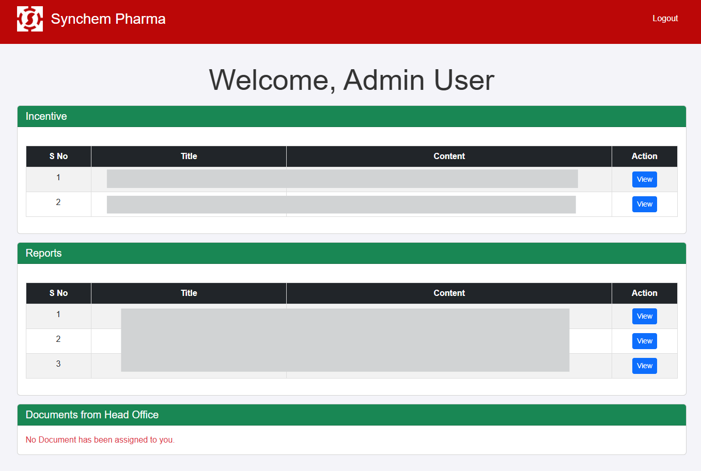

Employee Web Portal – Flask + SQL + PythonAnywhere
This full-stack web app was developed for Synchem Pharmaceuticals to help employees securely access their performance reports and incentive summaries in real-time. The app integrates a backend ETL process with a modern Flask UI and is hosted live on the cloud using a secure static IP connection.
⚙️ Technologies Used
- Flask (Python Web Framework)
- Azure SQL Server (Data Source)
- Python (pandas, JSON, pyodbc)
- PythonAnywhere (Web Deployment)
🚀 Features
- Secure ETL: Daily automated ETL pipeline fetches data from Azure SQL to a local server and syncs to PythonAnywhere using a static IP.
- JSON-Structured Data: Employee incentive and activity data is formatted in JSON for modular handling and MongoDB compatibility.
- Custom Dashboards: Each employee sees a filtered dashboard relevant to their targets and KPIs.
- Access Control: Login-based access with personalized routing to individual pages.
📈 Impact
This web app improved visibility and accountability for over 100 field employees. It significantly reduced manual report generation time and allowed the HR and sales leadership to monitor incentive metrics in real time.
🧠 Learnings
The project enhanced my experience in API design, data structuring with JSON, and working with production deployment using PythonAnywhere and Azure.